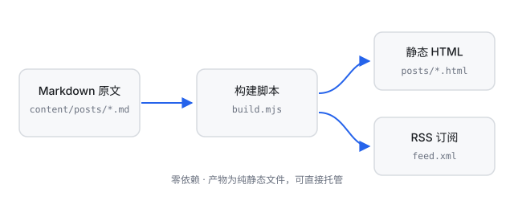

这个博客支持的 Markdown 写法
这份速查有两个作用：给我自己备忘，同时充当渲染器的回归测试。每次改 build.mjs，我都会翻到这页看一遍有没有渲染坏掉的地方。
渲染器的能力边界很明确：只支持我实际会写的语法，不追求完整的 CommonMark。

标题
一到六级标题，# 后面必须有空格。文章标题由 front matter 的 title 提供，正文里从二级标题开始用比较合适。
强调
**粗体**→ 粗体*斜体*→ 斜体~~删除线~~→删除线`行内代码`→行内代码- 组合：粗体里嵌
代码没问题
列表
无序列表，支持嵌套：
- 第一层项目
另一个第一层项目
- 嵌套的子项
- 再一个子项
- 回到第一层
有序列表：
- 第一步：写 Markdown
第二步：运行构建
- 脚本渲染正文
- 脚本更新首页列表
- 第三步：提交推送
代码块
围栏代码块用三个反引号，可以标注语言：
# 构建一次
node scripts/build.mjs
# 本地预览静态站点
python3 -m http.server 8000// 行内代码里的星号 * 不会被当成斜体
const re = /^\s*(```|~~~)\s*([\w+#.-]*)\s*$/;不带语言标注也可以，就是没有语法高亮 class。
引用
引用块可以嵌套渲染，里面照样能放 粗体、
代码和链接。多个段落也没问题。
表格
| 左对齐 | 居中 | 右对齐 |
|---|---|---|
:--- | :---: | ---: |
| 内容 | 内容 | 1234 |
| 长一点的内容 | 中 | 5678 |
分隔线
三个或更多 -、*、_：
链接与图片
- 行内链接：GitHub
- 带标题的链接：示例站点
- 自动链接：https://example.com
- 图片：
，上面的流程图就是这么插进来的
换行
段落内直接换行会被当作软换行：中文之间直接拼接，不会多出空格；英文之间补一个空格。
如果想强制换行，在行尾加两个空格：
这一行结尾有两个空格，
所以这里断开了。
不支持的部分
有意没做的，免得哪天自己踩坑：
- 原始 HTML —— 会被转义成文本显示，这是故意的安全设计
- 脚注、定义列表、任务列表 —— 用不到
- 数学公式 —— 需要的话我会贴图片
- Setext 标题（用
===或---划线）—— 后者会和分隔线、front matter 打架，一律用#
需要新语法时，先问一句「我一个月会用几次」，答案小于三就不加。